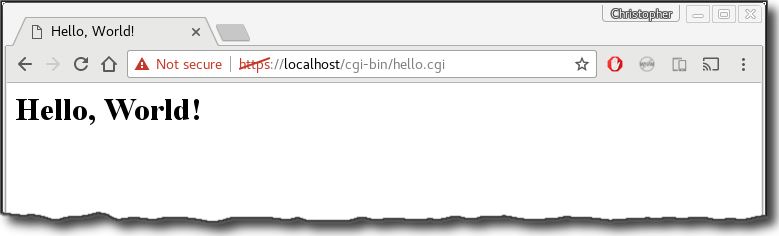
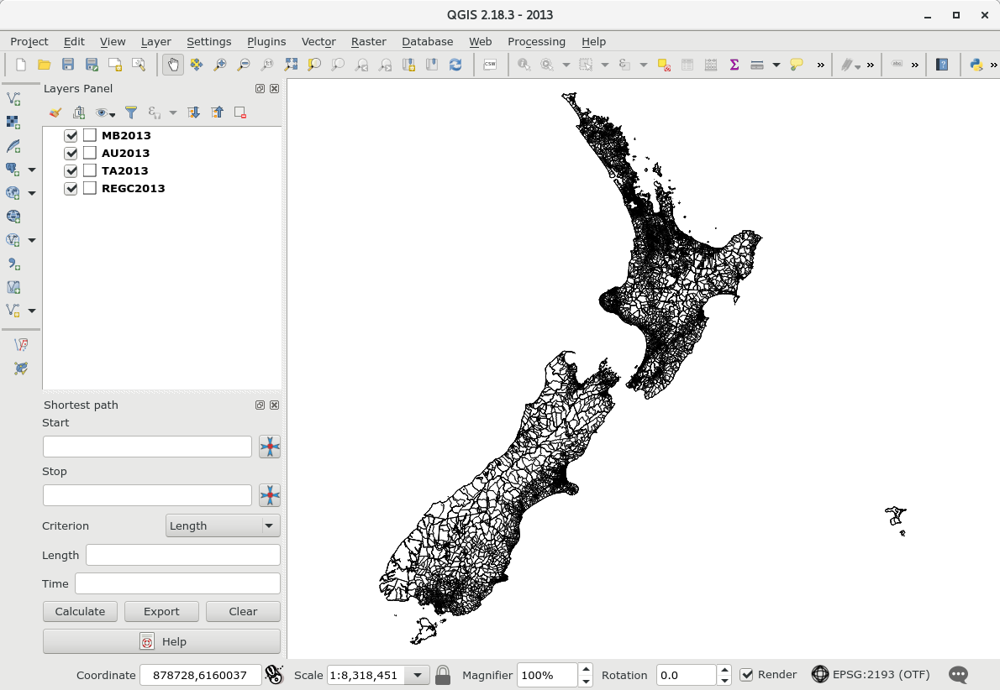

Overview
In an earlier post, we looked at how to style a map using TileMill (actually, using a fork called TileOven), render tiles with Mapnik, and finally serve tiles using TileStache.
Serving tiles in this way is useful, avoiding the need to bundle potentially large features with an online map or web app. At the same time, the outlined process is a little involved.
In this post we look at the open source Quantum GIS. QGIS provides functionality to publish maps as WMS / WFS / WCS services, and so we look at how this is done.
QGIS is made extensible via plugins, and this is a strong feature of the product. We also look at a plugin called QMetaTiles which can make a set of static tiles which can be combined with a web server to be used as a standard tile service.
Prerequisites
In this post we outline the steps required on a Debian-based Linux distribution (Ubuntu or Debian). However, for the most part, things should be able to be adapted for use on a Windows platform.
QGIS + QGIS Server
To install, simply run:
sudo apt-get install qgis qgis-serverThe version of QGIS available will likely be an older, LTS version. If a newer version is desired, simply follow the instructions provided on the QGIS website. In the case of Ubuntu / Debian Linux:
fastcgi + NGINX
To deploy QGIS maps as a service, a CGI-enabled web server is required. For illustration here we use NGINX and FastCGI. But Apache is relatively easy to use on both Linux and Windows users. Windows users might find it easy to use IIS and FastCGI for IIS.
Regardless, to install both NGINX and fastcgi:
sudo apt-get install nginx fcgiwrapTo enable CGI, modify the NGINX default config (probably something like /etc/nginx/sites-available/default) so it looks as follows:
...
server {
...
location /cgi-bin/ {
gzip off;
include fastcgi_params;
fastcgi_param SCRIPT_FILENAME /usr/lib$fastcgi_script_name;
fastcgi_pass unix:/var/run/fcgiwrap.socket;
}
...
}
...When done, test the config and restart NGINX if all is well:
sudo /etc/init.d/nginx configtest && sudo /etc/init.d/nginx reloadTo conduct a quick test, we can make a little CGI script. On my machine, I created a file called /usr/lib/cgi-bin/hello.cgi with the following content:
#!/usr/bin/python
print "Content-type: text/html\n\n"
print "<html><head><title>Hello, World!</title></head>\n"
print "<body><h1>Hello, World!</h1></body></html>\n"The file needs to be made readable and executable, so:
sudo chmod go+rx /usr/lib/cgi-bin/hello.cgiThen, browsing to http://localhost/test/hello.cgi will yield something like:

Publish QGIS Maps via WMS
Here we’ll consider just two simple examples:
- several polygon feature classes from SQLite
- several rasters from geoTIFF files.
(It had been my intention to use shapefiles for the polygon features, but QGIS kept crashing when adding labels to the Area Unit layer, and when setting the rendering option ‘only draw labels which fit completely within feature’–the exact same feature class exported to SQLite does not seem to have this issue.)
In each case we will use R to demonstrate consumption of the service using the leaflet package, and the addWMSTiles function.
As a short-cut, the two projects have been archived and uploaded to GitHub at:
Polygons
We start QGIS, and we load 4 polygon feature classes:
- MB2013
- AU2013
- TA2013
- REGC2013
The project is saved as ~/Maps/2013/2013.qgs, and each of the included feature classes is saved in the same directory as the project. In addition we also place a copy of /usr/lib/cgi-bin/qgis-mapserve.fcgi in the directory.

Only basic styling is applied–simple black outlines for each feature class, and labels only visible at certain scales.


Next, to enable the map as a web service, open the the project properties (CTRL + SHIFT + P), and select ‘OWS Server’. There, check the ‘Service capabilites’ box, and also the ‘Use layer ids as names’ box. To enable WFS, also check each box in the ‘Published’ column in the table under the section labelled ‘WFS capabilities (also influences DXF export)’. Click the ‘Launch’ button in the ‘Test configuration’ section to confirm everything is okay, the click ‘OK’, and save the project.

At this point, the service isn’t yet published. To do this, first ensure that the ‘Save paths’ option in the project properties is set to ‘relative’:

Then, copy the project to /usr/lib/cgi-bin/, which is where the webserver is configured to run CGI scripts from (of course, modify this as you see fit if you have decided, for safety reasons or otherwise, to serve CGI content from a different location):
sudo cp -R ~/Maps/2013 /usr/lib/cgi-bin/
sudo chmod -R go+rx /usr/lib/cgi-bin/2013If all is well, you should get a response at the following URI:
http://localhost/cgi-bin/2013/qgis_mapserv.fcgi?service=wms&request=getcapabilities
The result should be an XML file describing the service. It is, of course, possible to get images directly from the service given the right set of parameters. For example:
https://localhost/cgi-bin/2013/qgis_mapserv.fcgi?&SERVICE=WMS&REQUEST=GetMap&VERSION=1.1.1&LAYERS=REGC2013&STYLES=&FORMAT=image%2Fpng&TRANSPARENT=true&HEIGHT=256&WIDTH=256&SRS=EPSG%3A2193&BBOX=1089971.21440,4747987.36420,2470042.12700,6194308.49260yields the following thumbnail:

As a further example, we use R to create a leaflet map containing each layer:
library(leaflet)
uri <- "https://localhost/cgi-bin/2013/qgis_mapserv.fcgi?"
leaflet() %>%
addTiles() %>%
fitBounds(167, -48, 179, -34) %>%
addWMSTiles(
baseUrl=uri,
layers="REGC2013",
options = WMSTileOptions(format = "image/png", transparent = TRUE),
group = "Regional Council"
) %>%
addWMSTiles(
baseUrl=uri,
layers="TA2013",
options = WMSTileOptions(format = "image/png", transparent = TRUE),
group = "Territorial Authority"
) %>%
addWMSTiles(
baseUrl=uri,
layers="AU2013",
options = WMSTileOptions(format = "image/png", transparent = TRUE),
group = "Area Unit"
) %>%
addWMSTiles(
baseUrl=uri,
layers="MB2013",
options = WMSTileOptions(format = "image/png", transparent = TRUE),
group = "Meshblock"
) %>%
addLayersControl(
baseGroups = c(
"Regional Council", "Territorial Authority",
"Area Unit", "Meshblock"
),
options = layersControlOptions(collapsed = FALSE)
)Rasters
We start QGIS and load the raster Nitrogen_Leaching_20150903.tif. The project is saved as ~/Maps/nitrogen.qgs, and both the raster and a copy of /usr/lib/cgi-bin/qgis-mapserve.fcgi is placed in the same directory.

Some basic styling is applied. Specifically, the colouring is changed from greyscale to psuedo-colour (yellow to red).

Making the map available as a web service is similar to before, except we check features under the ‘WCS’ heading rather than ‘WFS’.
As before, we copy the project to the web server root directory, and alter permissions to make it readable (and executable):
sudo cp -R ~/Maps/nitrogen /usr/lib/cgi-bin/
sudo chmod -R go+rx /usr/lib/cgi-bin/nitrogenAgain, if the service is functioning correctly, there should be at the following URL:
http://localhost/cgi-bin/nitrogen/qgis_mapserv.fcgi?service=wms&request=getcapabilities
And, again, it should bepossible to get images directly from the service given the right set of parameters. For example:
https://localhost/cgi-bin/nitrogen/qgis_mapserv.fcgi?&SERVICE=WMS&REQUEST=GetMap&VERSION=1.1.1&LAYERS=nitrogen&STYLES=&FORMAT=image%2Fpng&HEIGHT=256&WIDTH=256&SRS=EPSG%3A2193&BBOX=1089971.21440,4747987.36420,2470042.12700,6194308.49260yields the following thumbnail:

As a further example, we use R to create a leaflet map containing each layer:
library(leaflet)
uri <- "https://localhost/cgi-bin/nitrogen/qgis_mapserv.fcgi?"
leaflet() %>%
addTiles() %>%
fitBounds(167, -48, 179, -34) %>%
addWMSTiles(
baseUrl=uri,
layers="nitrogen",
options = WMSTileOptions(format = "image/png", transparent = TRUE),
group = "nitrogen"
)%>%
addLayersControl(
overlayGroups = c("nitrogen"),
options = layersControlOptions(collapsed = FALSE)
)
Make a Tilecache and Publish via a Webserver
Plugins are easy to install in QGIS–simply click the ‘Plugins’ menu item, and then select ‘Managa and Install Plugins…’. Search for QMetaTiles, and click install. Once installed, we simply open the previous nitrogen.qgs project, and run the QMetaTiles plugin. We simply chose a target directory, and the zoom levels required, and then run the plugin.

Of course, the problem with a tile cache is size. A tileset covering just New Zealand down to a low zoom can easily total several gigabytes in size. On the other hand, a tile server which creates images on-the-fly only requires the raw inputs be saved–in this case totalling only 40 or so megabytes.
Regardless, we can copy the tiles somewhere on the webserver path, and then treat them as a tile service. In this case, I moved the tiles to /var/www/html/tilecache/nitrogen as follows:
sudo mkdir -p /var/www/html/tilecache
sudo mv ~/Maps/tilecache/nitrogen /var/www/html/tilecache/
sudo chmod -R go+rx /var/www/html/tilecacheThe ‘service’ should then be reachable at:
http://localhost/tilecache/nitrogen/{z}/{x}/{y}.pngFor example, we can make a leaflet chart in R as follows:
library(leaflet)
leaflet() %>%
fitBounds(167, -48, 179, -34) %>%
addTiles() %>%
addTiles(
urlTemplate="https://localhost/tilecache/nitrogen/{z}/{x}/{y}.png",
group = "nitrogen"
) %>%
addLayersControl(
overlayGroups = c("nitrogen"),
options = layersControlOptions(collapsed = FALSE)
)